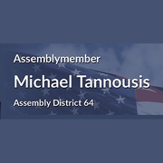
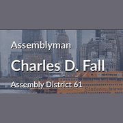
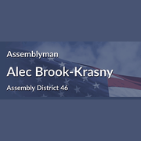

The district
 State Assembly
State Assembly State Senate
State Senate Congress
Congress Subway
Subway Citi Bike
Citi Bike NYC Ferry
NYC FerryTurn layers on and off. Tap an official's logo or a board's seal for its page. Zoning and land use lot by lot are on the land use map.
About
Council Member David Carr represents City Council District 50. It reaches into Brooklyn and Staten Island.
The district overlaps community boards Brooklyn 10, Staten Island 1, Staten Island 2 and Staten Island 3.
It is policed by the 68th, 120th, 121st and 122nd Precincts.
It overlaps Assembly districts 46, 61, 62, 63 and 64 and Senate districts 23 and 24.
Took office November 30, 2021. Members of the City Council serve four year terms and are limited to two consecutive terms.
Next on the ballot in November 2029, when the seat will be open: Council Member Carr is term limited and cannot run again. For the election in front of us, see where you vote in November 2026 or what is coming up on the calendar.
Council District 50 in numbers
The Census publishes no figures for council districts. These are the community districts Council District 50 covers.


U.S. Census Bureau, American Community Survey 2019-2023 5-year estimates.
Committees
Contact
Overlap
Community boards
Bars show how many of the district's election districts fall in each board.
Overlapping elected officials







| Staten Island CB 2 | 74% of the council district | 83% of it |
| Staten Island CB 3 | 9% of the council district | 10% of it |
| Staten Island CB 1 | 9% of the council district | 15% of it |
| Staten Island park/airport area | 4% of the council district | 50% of it |
| Brooklyn CB 10 | 4% of the council district | 21% of it |
| Brooklyn CB 11 | 1% of the council district | 6% of it |
| 122 Precinct | 52% of the council district | 77% of it |
| 121 Precinct | 39% of the council district | 55% of it |
| 68 Precinct | 4% of the council district | 21% of it |
| 120 Precinct | 4% of the council district | 10% of it |
| 62 Precinct | 1% of the council district | 6% of it |
| Sector 121C | 25% of the council district | 85% of it |
| Sector 122C | 22% of the council district | 99% of it |
| Sector 122A | 15% of the council district | 49% of it |
| Sector 122B | 15% of the council district | 100% of it |
| Sector 121D | 9% of the council district | 47% of it |
| Sector 121B | 5% of the council district | 56% of it |
| Sector 120C | 3% of the council district | 26% of it |
| Sector 68A | 3% of the council district | 52% of it |
| Sector 62C | 1% of the council district | 30% of it |
| School District 31 | 94% of the council district | 39% of it |
| School District 20 | 4% of the council district | 12% of it |
| Senate District 24 | 83% of the council district | 43% of it |
| Senate District 23 | 14% of the council district | 20% of it |
| Senate District 26 | 2% of the council district | 6% of it |
| Senate District 17 | 1% of the council district | 3% of it |
| Assembly District 63 | 42% of the council district | 52% of it |
| Assembly District 64 | 41% of the council district | 74% of it |
| Assembly District 62 | 9% of the council district | 10% of it |
| Assembly District 61 | 4% of the council district | 14% of it |
| Assembly District 46 | 4% of the council district | 20% of it |
| Assembly District 47 | 1% of the council district | 6% of it |